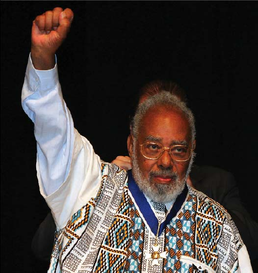

🌟 Figuras que Fizeram História
Zumbi dos Palmares
Último líder do Quilombo dos Palmares. Símbolo da resistência contra a escravidão no Brasil.

Marielle Franco
Vereadora, ativista e defensora dos direitos humanos. "Quantos mais vão morrer para que essa guerra acabe?"
Luísa Mahin
Africana livre que participou da Revolta dos Malês. Uma das primeiras mulheres negras a lutar pela liberdade no Brasil.

Abdias do Nascimento
Fundador do Teatro Experimental do Negro. Grande ativista e lutador contra o racismo.
